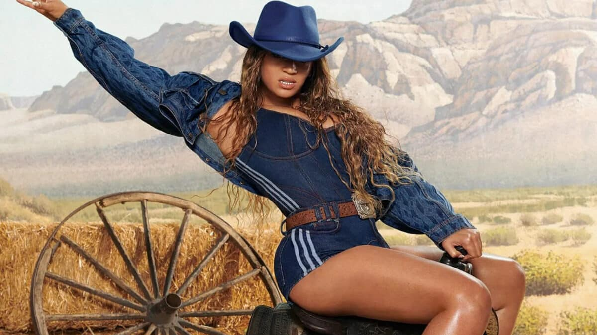

Musica
Featured Products

2014 Forest Hills Drive
The third studio album by American rapper J. Cole. Released on December 9, 2014, the album includes hits like “Apparently,” “Wet Dreamz,” “No Role Modelz,” and “Love Yourz.” It received widespread acclaim for its ambitious concept, production, and lyrics. The album debuted at number one on the US Billboard 200 and was certified triple platinum by the RIAA in May 2019

Cowboy Carter
Cowboy Carter (also referred to as Act II: Cowboy Carter) is the eighth studio album by American singer and songwriter Beyoncé, released on March 29, 2024, via Parkwood Entertainment and Columbia Records. A concept album, Cowboy Carter is the second of a planned trilogy of albums, following Renaissance (2022). Beyoncé conceived Cowboy Carter as a journey through a reinvention of Americana, spotlighting the overlooked contributions of Black pioneers to American musical and cultural history.

The Thrill of it All
It is the second studio album by English singer and songwriter Sam Smith.[7] It was released on 3 November 2017 through Capitol Records."The Thrill of It All" by Sam Smith explores the emotions and regrets associated with a past relationship. The song delves into the speaker's vulnerability and their realization that they may have been blinded by the excitement and passion of the relationship.